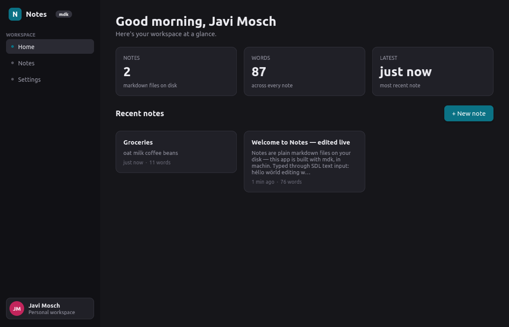
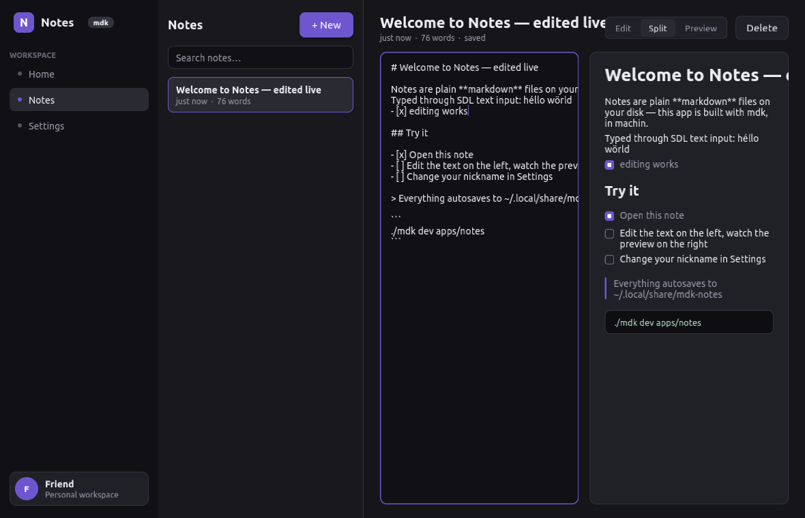
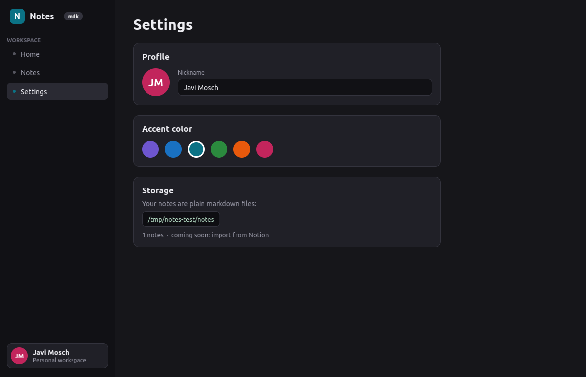

Notes — a markdown workspace in ~1,300 lines of MFL
A micro-SaaS-style dashboard for personal markdown notes: a greeting with your nickname, stats, recent notes, a searchable list, an editor with a live preview, and settings. Every note is a plain .md file on your disk.
./mdk dev apps/notes # hack on it with hot reload
./mdk build apps/notes -o notes && ./notes # 2.6 MB binary
What it does
Dashboard home
“Good morning, <nickname>” — note and word counts, the latest edit, and cards for the six most recent notes.
Editor + live preview
Edit, Split or Preview modes. Headings, bullets, tasks, quotes, code fences and rules render as you type.
Autosave to .md
Every edit writes the note's file. The folder is the database — readable, greppable, syncable without the app.
Search
Filters titles and contents as you type.
Profile
Nickname with a generated avatar, and an accent color that themes the whole app.
Shortcuts
ctrl+n new note · ctrl+v paste · ctrl+Backspace delete word · Esc leaves a field.

Typed through real SDL text-input events (UTF-8 included), autosaved, previewed live — the list title and word count follow.
Where your notes live
~/.local/share/mdk-notes/ # or $MDK_NOTES_DIR
├── profile.txt # nickname=… accent=…
├── notion.json # Notion tokens, mode 600 (after Connect)
├── notion-index.txt # page_id → file_id + last_edited_time
└── notes/
├── 1794566957208.md # one file per note; the name is its creation time (ms)
└── 1794569119000n666ff6ccaa5b.md # imported: <created-ms>n<hash(page_id)>The title is the note's first line (leading #s stripped). Titles, word counts and snippets are cached in the host state store and refreshed on save, so the list never re-reads every file.
Import from Notion
Settings → Connect Notion runs a real OAuth login — one click, no tokens to paste:
- The app binds a loopback listener, generates a PKCE verifier/challenge and asks the notes-auth broker for the authorize URL (
/notion/start?format=json). xdg-openopens Notion's consent page; you pick the pages to share.- Notion redirects to the broker, which exchanges the code with the client secret (which never leaves the server) and bounces your browser to
http://127.0.0.1:<port>/cb?nonce=…— the token never appears in a URL. - The app claims the token once (
POST /notion/claimwith the verifier), stores it owner-only innotion.json, and starts the first sync automatically.
Sync searches every page shared with the integration, fetches each page's blocks recursively (headings, lists, to-dos, quotes, callouts, toggles, code, tables, child pages, links — inline bold/italic/code/strikethrough too), and writes one markdown note per page with a <!-- notion: id=… edited=… --> trailer. Re-sync skips pages whose last_edited_time is unchanged, so it's cheap to run often. Requests are paced under Notion's ~3 req/s limit, expired tokens refresh through the broker, and everything runs on a background goroutine while the UI shows progress.
The broker is a ~350-line Go sidecar (broker/notion-auth) deployed on dk1 behind Traefik; pending logins live in memory for 5 minutes and tokens are single-use.
How it's built
| file | what |
|---|---|
apps/notes/app.src | the UI: sidebar, home, notes (list + editor + preview), settings |
apps/notes/data.src | storage: list / read / write .md files, titles, snippets, word counts, profile |
apps/notes/notion.src | Notion connect: PKCE login via the broker, loopback listener, token file |
apps/notes/notion_sync.src | Notion import: page search, recursive blocks, markdown conversion, re-sync |
apps/notes/app.conf | title=Notes · size=1180x760 |
It uses only the public framework: scroll_view, text_field, text_area, md_view, card, nav_item, list_item, avatar, badge, button — see the API.
What dogfooding found
Building a real app is the point: it surfaced what the benchmarks never would.
- Text input, focus, clipping, scroll views, overlays — none existed; the app needed all of them (milestone 2.5, done here).
- A use-after-free in the state store:
set_str(k, state_str(k))freed the slot before copying it, writing 6 bytes of garbage into a note. State strings are now per-frame copies andset_strcopies first. - Flex semantics:
grow()kept content size as its basis, so equal cards came out unequal; it is now a zero basis (CSSflex: 1), and growing children in a row are measured against the width they will actually get, so wrapped text fits.

Next
- Styled inline markdown in the preview (links as accent text, real bold/
coderuns — needs host span support; today links are flattened to readable text), text selection, soft-wrapped editing. - Tags and pinning, from front-matter in the
.mdfiles. - Two-way Notion sync (push edits back), and importing Notion databases as tables.